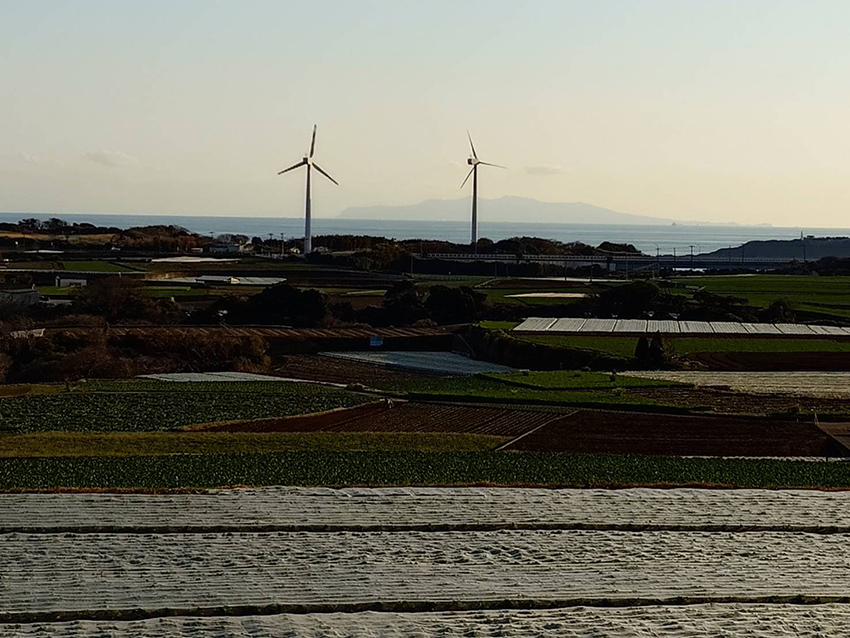
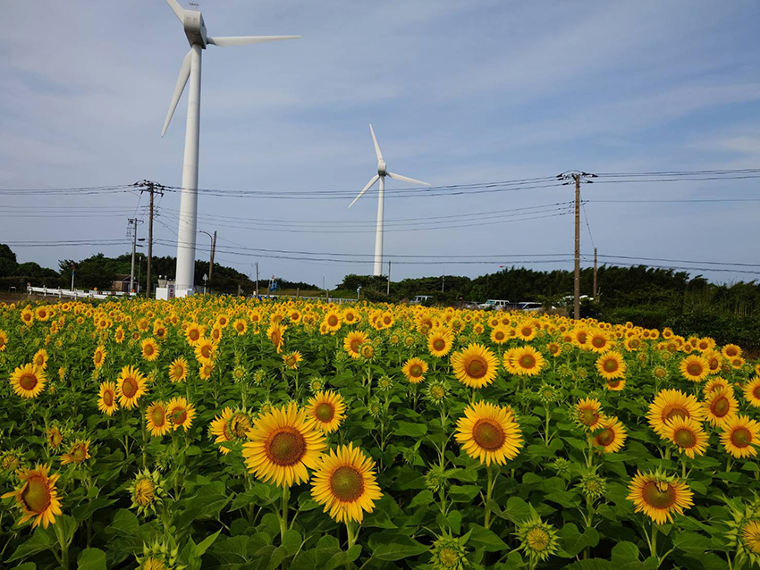

セット販売
メロン・スイカ・カボチャの季節のおすすめセット
メロン・スイカ・カボチャを中心に、
自家製アイスや甘酢漬けまでお届けします

旧三浦市の毘沙門地区で、米・野菜・果樹栽培を行っております。当圃から梨の栽培が始められ折りの産れ、県内でも地として知地域では江戸時代後られています。
こだわっているのは、畑づくり。
有機使用することで質を多く含んだ肥料を根の発育後の籾殻をふんだんに入れを促進しています。稲刈りた土壌は触るとふかふかです。
地確立された品質が道な作業の積評価され、ホテル等への提供も行なっています。果本らも高い来の甘さとシャリ重ねによりキっとした食感で、プロの評価を頂いている料理人かます。
丸万木村農園に自慢のメロンを、是非ご賞味ください。


農薬に頼らない植物の抵抗力発現は最大のテーマ として捉え、バイオスティミュラント技術（農薬 外の資材による生物体刺激）の導入、深化を進め ています。 そしてなにより大事なのはここから。このよう な情報を元にお客様とのコミュニケ